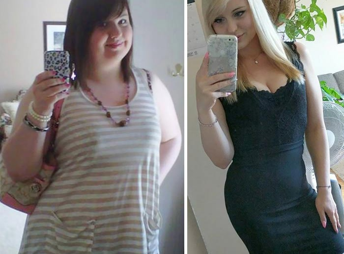
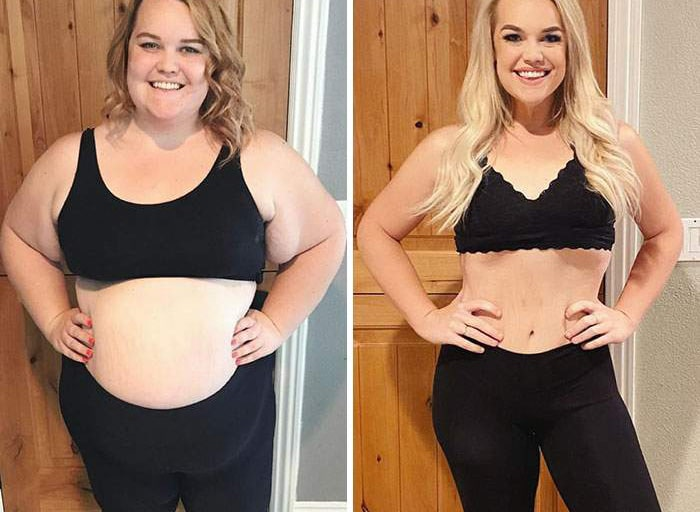
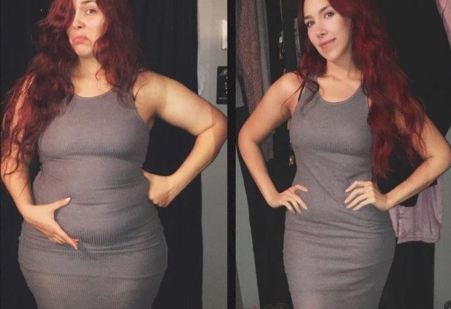
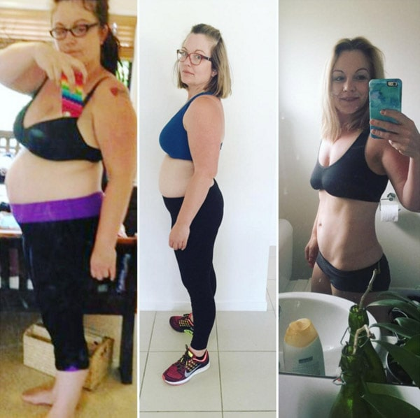
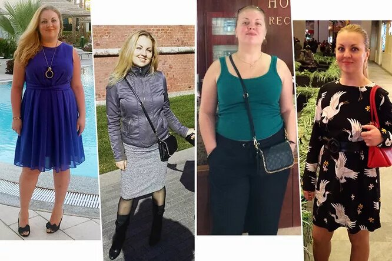
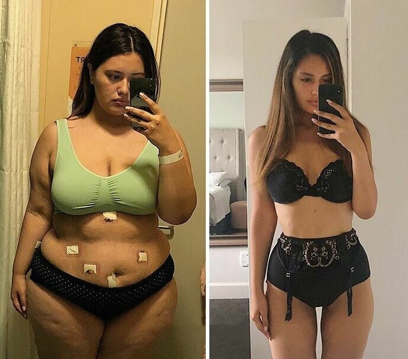
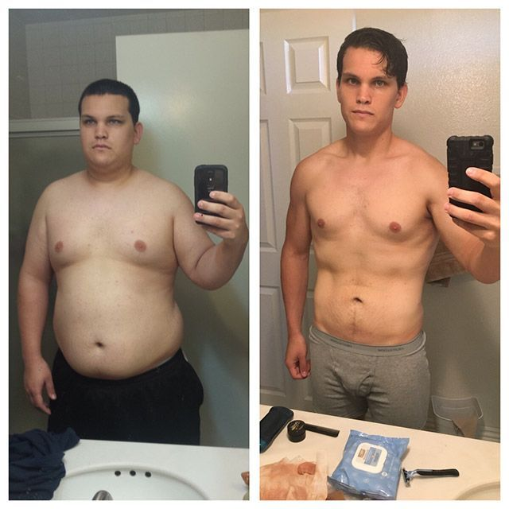

Средство, с которым худеют все:
Похудеть в бедрах и животе после 45-ти теперь легко!
Если вы когда-либо пытались избавиться от лишнего веса, то наверняка знаете, что основные способы сделать это – диеты и физические нагрузки, а к экстремальным относятся таблетки и липосакция. Но время показало, что ни один из этих методов не является достаточно эффективным, ведь число людей с избыточным весом продолжает расти.
Сегодня положение дел резко изменилось вместе с появлением средства, стимулирующего снижение веса за счет естественных процессов. Но не будем забегать вперед. Обо всем по порядку расскажет руководитель института диетологии Алексей Смирнов.
Алексей – врач с более чем двадцатилетним стажем работы. Это высококлассный специалист в области гастроэнтерологии и диетологии. Он принимает активное участие в различных конференциях и исследованиях, посвященных проблеме борьбы с лишним весом. На его счету более 7000 женщин, которые успешно избавились от ненавистных килограммов, смогли стать здоровее, красивее и увереннее в себе.
Лишний вес: не просто эстетическая проблема, а смертельная угроза.
Ожирение – бич XXI века. Это настоящая смертельная пандемия. Врачи не устают бить тревогу, ведь от лишнего веса страдают более 30% населения Земли. Лишний вес вызывает не только психологические проблемы, но и целый комплекс жизнеугрожающих последствий, среди которых:
- сахарный диабет;
- сердечный приступ;
- инсульт;
- панкреатит;
- варикозное расширение вен;
- нерегулярный менструальный цикл и бесплодие у женщин;
- импотенция у мужчин;
- гипертония.
Эти последствия приводят к большому количеству смертей. Как сообщает всемирная организация здравоохранения, из-за последствий ожирения в мире ежедневно умирает от 30 до 50 тысяч человек.

В подавляющем большинстве случаев причиной избыточного веса становятся сбои в обменных процессах
У всех нас есть тот самый друг, что ест фастфуд практически круглосуточно, но при этом остается стройным. И есть люди, находящиеся на другом краю этого пищевого полюса – те, кто толстеет лишь от одного взгляда на еду. Этот феномен давно интересовал ученых, и последние исследования говорят о том, что люди продолжают набирать вес из-за нарушений в метаболических процессах.
Почему вы не можете похудеть благодаря диетам
Диета – это большой стресс для организма, который воспринимает ее как жизнеугрожающий сигнал. Включаются защитные механизмы, и, дабы избежать смерти, мы начинаем активно запасть каждую калорию, попадающую к нам с пищей. При этом, количество затрачиваемых на жизнедеятельность калорий резко сокращается. По сути, организм запасает жир, чтобы выжить в ситуации голодовки.
Физические нагрузки – не панацея
Дело в том, что при занятиях спортом расходуется лишь небольшое количество энергии. Исследования, проведенные учеными, говорят о том, что население диких племен, которые занимаются охотой и собирательством и постоянно находятся в движении, тратит энергии не больше среднестатистического человека. Поэтому теория о том, что эпидемия ожирения в мире связана с малоподвижным образом жизни, ошибочна. Более того, физическая активность может даже тормозить процесс похудения, потому что чем больше мы двигаемся, тем больше хотим есть. Таким образом, мы с лихвой восполняем тот недостаток калорий, который возник благодаря занятиям спорту, и даже съедаем больше и наоборот толстеем.
Что делать?
Ученые Института диетологии смогли изобрести эффективный препарат, который снижает вес в самые короткие сроки и без последствий для организма.
Средство получило название W-loss. Это жиросжигатель, который ускоряет обменные процессы с помощью тщательно подобранного натурального состава. Благодаря W-loss жир начинает таять в три раза быстрее.

Что такое W-loss?
Когда организм нуждается в витаминах, мы употребляем в пищу фрукты и овощи. Если нам не хватает белка – едим мясо. Но почему, если нам надо похудеть, мы перестаем есть? Как удалось выяснить ученым, этот процесс устроен не так.
Дело в том, что если мы начинаем бесконтрольно набирать лишний вес, организм подает нам сигналы о том, что ему не хватает микроэлементов, которые отвечают за расщепление жира.
W-loss – это полностью натуральный концентрат в виде капель, в состав которого входят экстракты, усиливающие обмен веществ на 300% и липолиз (процесс расщепления жиров) почти в 8 раз.
Все составляющие W-loss направлены на процесс сжигания излишков жировых клеток – как подкожных, так и висцеральных. Этот препарат очищает организм от шлаков и токсинов, помогает улучшить тонус кожи и предупреждает ее обвисание. Благодаря W-loss вы сможете сбросить от трех килограммов уже за первую неделю:
День 1
Подготовительный этап перед началом безопасного похудения: очищение желудочно-кишечного тракта, восстановление баланса жидкости в организме.
День 2
W-loss выводит излишки холестерина и глюкозы. Воздействуя на рецепторы, отвечающие за распознавание сладких продуктов, снижает тягу к сахару.
День 3
Начинается этап активизации жиросжигания.
День 4
Обменные процессы ускоряются, замедляется процесс отложения жиров.
День 5
W-loss корректирует процесс усвоения белков и углеводов. Белки, поступающие с едой, трансформируются в мышечную ткань, углеводы выводятся в неизменном виде.
День 6
Нормализуется работа желудочно-кишечного тракта.
День 7
Вы чувствуете прилив сил за счет тонизирующего эффекта и улучшения обменных процессов.
Ускорение обмена веществ благодаря W-loss приводит к потере жировой клетчатки в проблемных зонах до 500 г в день! Также W-loss подтвердил свою эффективность и в тех случаях, когда набор веса связан с гормональным дисбалансом.
Совет по приему W-loss
Для усиления эффекта рекомендуется принимать препарат натощак.
Результаты пациентов, принимавших W-loss

«С W-loss я вижу результаты, которых не могла добиться ни с одним другим средством. Буду продолжать принимать и дальше!»

«Благодаря W-loss я стала совершенно другим человеком! Наконец-то могу носить вещи, которые мне нравятся, а не которые налезли».

«После беременности никак не могла скинуть вес, помог мне только W-loss. Муж снова начал видеть во мне женщину, а я снова полюбила себя».
Комментарий специалиста
«В процессе похудения самое главное – не навредить своему организму. Увы, далеко не все способы позволяют сохранить здоровье. Ясное дело, что вы не сможете соблюдать диету в течение всей жизни. Люди часто попадают в замкнутый круг сброса и набора веса потому, что у них не хватает силы воли. Они начинают искать альтернативные способы: идут на опасные операции, принимают сомнительные таблетки. Большинство пациентов попадает ко мне уже в плачевном состоянии – с разрушенной иммунной и гормональной системами, с почечной недостаточностью, с многочисленными проблемами с желудочно-кишечным трактом.
Не устаю повторять: худеть нужно аккуратно и с помощью безопасных средств. Например, W-loss обеспечивает естественное похудение, так как положительным образом влияет на метаболизм и сжигание жировых отложений.
По моему мнению, это лучший препарат для избавления от лишнего веса».
Результаты клинических исследований
Группа добровольцев с избыточным весом, состоящая из 4386 человек, на протяжении месяца принимала W-loss в соответствии с инструкцией. В результате были получены следующие данные:
- 92% исследуемых – похудели более, чем на 10 килограммов;
- 100% исследуемых – отметили улучшение общего самочувствия;
- 100% исследуемых – отметили улучшения в работе желудочно-кишечного тракта.
Где приобрести W-loss?
Совсем недавно в нашей стране стартовала программа, цель которой сделать W-loss доступным для каждого человека, вне зависимости от его финансовых возможностей.
Согласно условиям акции, до года включительно покупатели смогут приобрести W-loss со скидкой. По истечению этого срока программа будет остановлена.
Для того, чтобы приобрести W-loss со скидкой, просто оставьте заявку в поле ниже:
Читайте больше историй похудевших с W-loss:

Лучший способ похудения, который я когда-либо пробовала: минус 40 килограммов и подтянутое тело
Легко сбросила 100 килограммов и начала новую жизнь. Моя методика похудения после 50 лет

Моя реальная история похудения без вреда для здоровья и диет
Мне срочно нужно это средство! Оставила заявку, надеюсь, W-loss к тому моменту не раскупят подчистую
Главное соблюдать инструкцию! Тогда вы через месяц себя в зеркале не узнаете
Благодаря W-loss я смогла избавиться от 23 килограммов. Раньше я весила 89 килограммов, была очень неповоротливой и грузной теткой, хотя мне не так много лет. Когда начала принимать W-loss не особо верила в его эффективность. Но уже через неделю заметила первые результаты – старые штаны стали мне большими, объем талии уменьшился на 7 сантиметров! У меня ушло два месяца, чтобы прийти в свою идеальную форму.

А у меня почему-то ушло всего 4 кг за месяц… Изначальный вес 58 кг. Сейчас – 54
Ну, это понятно. Вы что, собрались довести себя до истощения? У вас идеальный вес!
Мне только сегодня доставили посылку с W-loss, чувствую вдохновение перед началом приема) особенно впечатляют ваши результаты, девчонки!
Я сбросил 36 кг с W-loss за 3 месяца, вот мой результат:

Мне W-loss советовал диетолог, но я скептично отнеслась к его словам. Думала, впаривает мне очередную фигню. Теперь вижу, что это реально рабочее средство. Заказала себе несколько пачек
Оооо, давно знакома с этим средством. И советую его всем! Я считала, что когда тебе за 50, уже поздно начинать худеть – все равно ничего не выйдет. Но нет, с W-loss все возможно!